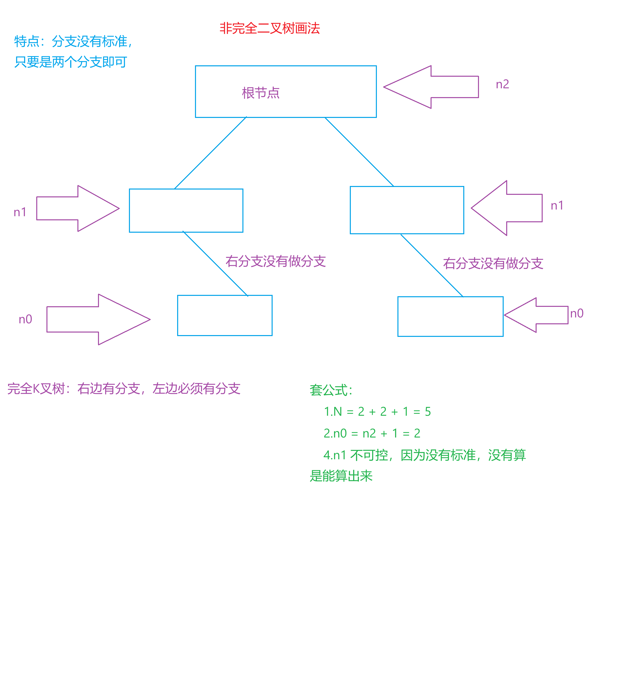
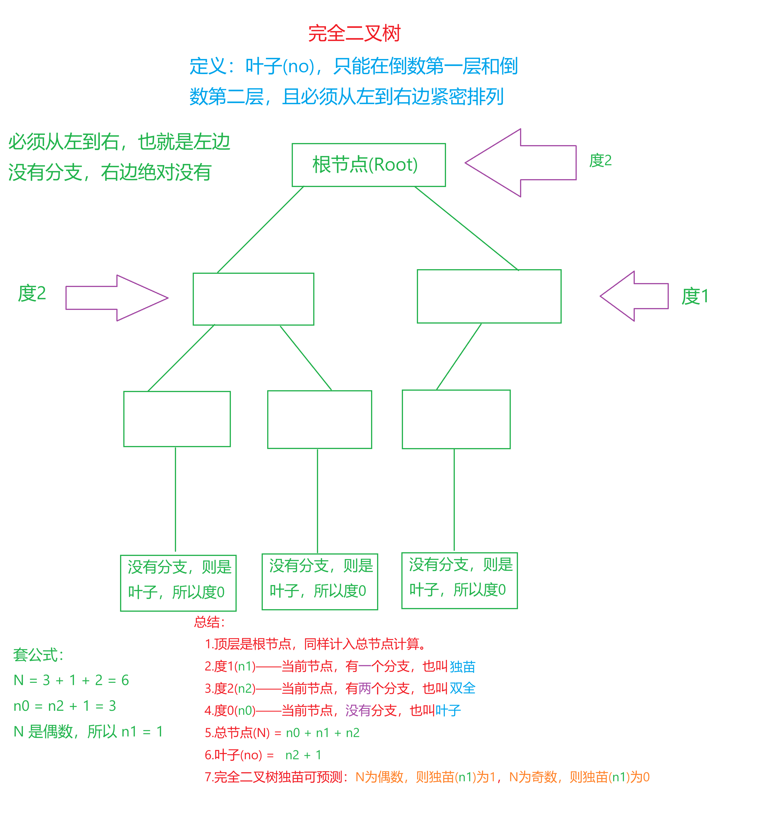
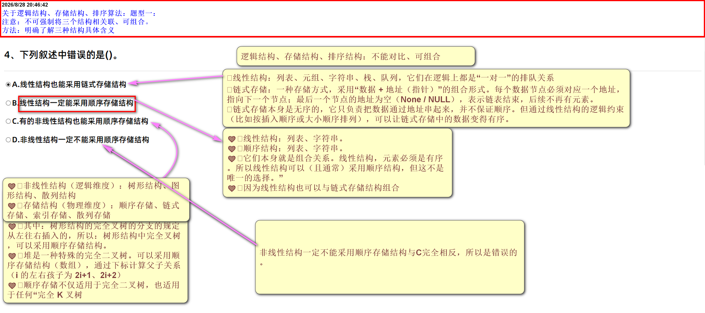
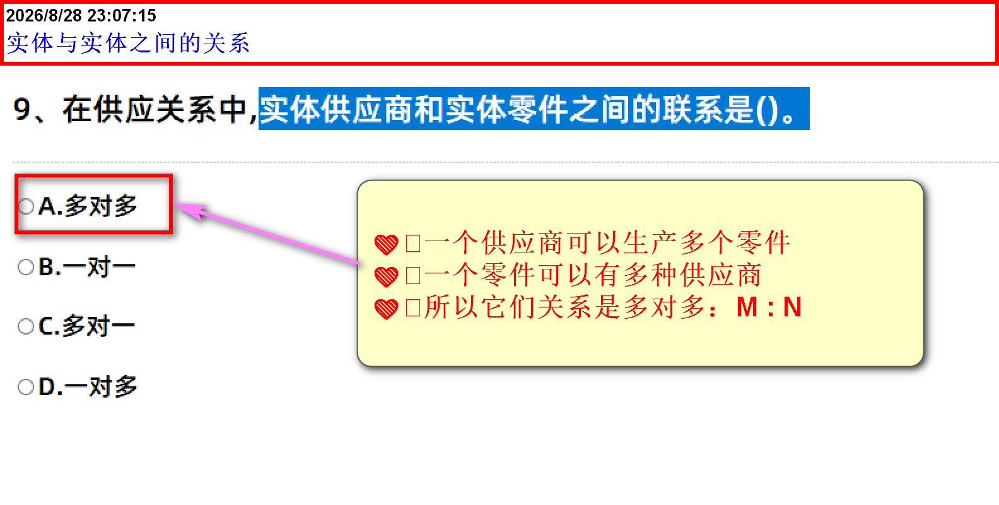
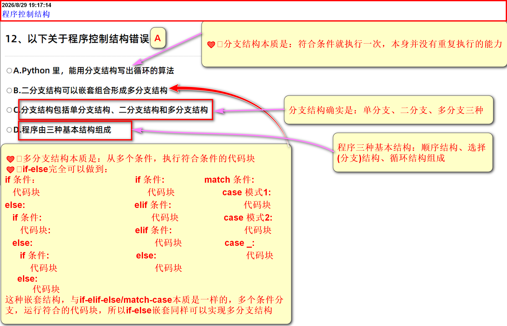
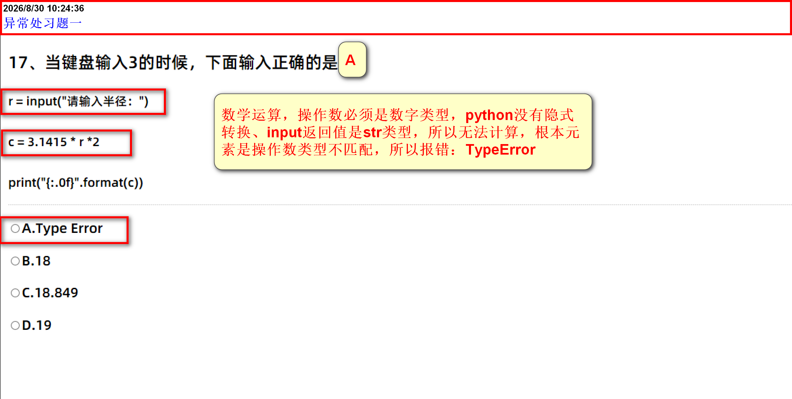
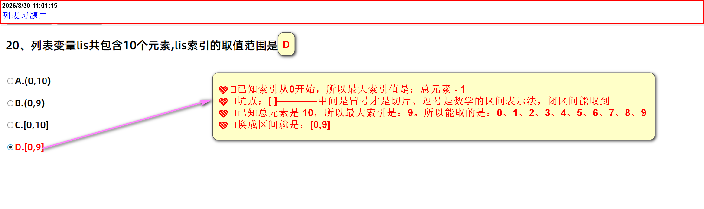
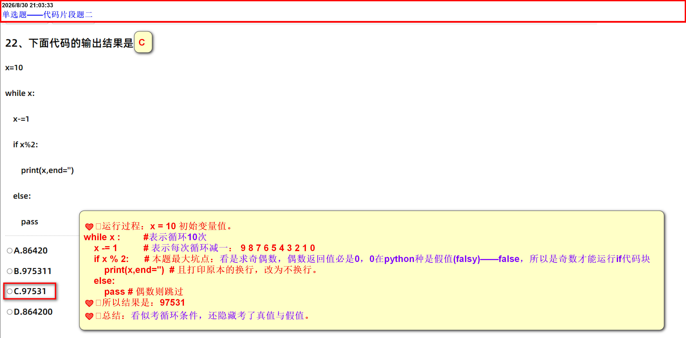
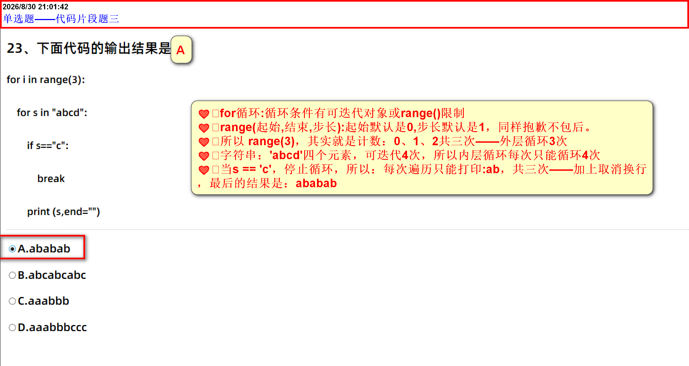
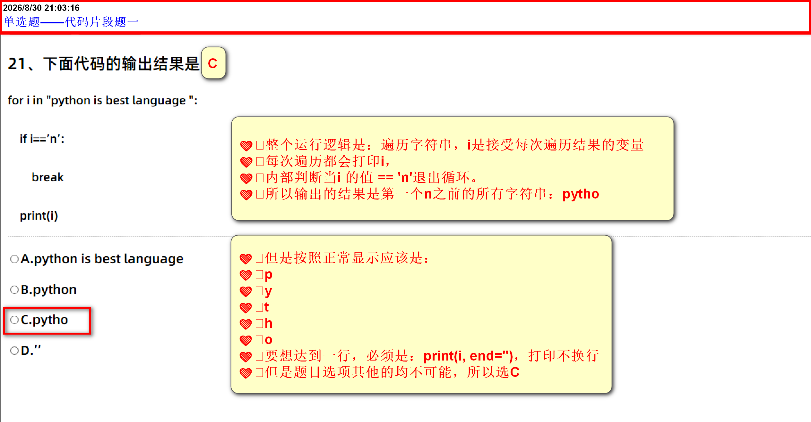

二级python选择题
-
某二叉树中有15个度为1的结点，16个度为2的结点，则该二叉树中总的结点数为（）。
- 套公式：
总结点 = 度0 + 度1 + 度2 - 公式2：
度0 = 度2 + 1 - 公式3：
度2 = 度0 - 1 - 公式4：
总分支个数 = 度0 * 0 + 度1 * 1 + 度2 * 2 - 公式5(公式4扩展)：
总分支个数 = N - 1 -
度1 的两种情况
-
在非完全二叉树状态下
- 度0，无法计算
-

-
在完全完全二叉数状态下
-
在普通二叉树里，叶子(
n0)可以长在任何地方。但在完全二叉树里，叶子只能出现在最后两层（倒数第一层和倒数第二层），而且必须从左往右紧密排列。 - 说白了：就是当前节点，右边有分支，左边必须有分支
- 度1：只有
0和1 - 当总节点数
N是偶数：度1 = 1 - 当总节点数
N是奇数：度1 = 0 -

-
在普通二叉树里，叶子(
-
名词解释
-
度(
Degree一般用小写n表示)：就是指当前节点伸出去的分叉(子节点)的个数 - 通常用
N表示总节点数 度0(
n0)：- 名词：表示当前节点 一根树枝都没伸出去，它就是这跟树枝的末端。也叫："叶子节点"
- 数量(非常重要)：表示，节点分支数量是
0，节点之和
-
度1(
n1)- 表示当前节点 只伸出了一根树枝（要么只有左孩子，要么只有右孩子）。——也叫“独苗”。
- 数量(非常重要)：表示，节点分支数量是
1，节点之和
-
度2(
n2)- 表示当前节点 只伸出了两根树枝（左边一根，右边一根）。——也叫“双全”。
- 数量(非常重要)：表示，节点分支数量是
2，节点之和
- 总边数(总分支数) = 每个分支数量对应的节点数量(
nk)，k为分支数量之和。 总边数(总分支数) = 0 * n0 + 1 * n1 + 2 * n2- 总边数(总分支个数)：因为根节点不会有分支与它相连，所以总分数个数，始终比总节点数少1
- 所以：
总边数(总结点数) = N - 1 - 所以：
N = n0 + n1 + n2 - 所以：
n0 = n2 + 1 - 注意：
n1要看是在 完全二叉树，还是在：非完全二叉树内，它们的状态不一样
-
度(
-
-
例题：题目：一棵完全二叉树共有 700 个节点，请问叶子节点（度0）有多少个？
解：
已知N = 700
因为是完全二叉树，N是偶数，所以:
700 = n0 + 1 + n2
已知n2比n0少1则：
2n1 + 1 = 699
n1 = 698 / 2 = 349
no = 350
综上所述：叶子节点数(no) = 350 -
通过二叉树——推导K叉树
- 已知二叉树只能有两个分支(
n1、n2) - 反推K叉树可以有K个分支(
n1、n2、n3 ... nk) - 总节点不必多说：
N = n0 + n1 + n2 + n3 + ... + nk -
n0的推导过程
N = n0 + n1 + n2 + n3 + ... + nk
总边数(总分支数) = 每个分支数量对应的节点数量(nk)，k为分支数量之和
总分支数 = 0 * n0 + 1 * n1 + 2 * n2 + 3 * n3 + ... + n * nk
总边数(总分支数) = N - 1
可得：
N - 1 = n1 + 2n1 + 3n3 + ... + knk
n0 + n1 + n2 + n3 + ... + nk = n1 + 2n2 + 3n3 + ... + knk + 1
n0 = n2 + 2n3 + 3n4 + ... + (k-1)nk + 1 - 所以K叉树的
n0公式是：n2 + 2n3 + 3n4 + ... + (k-1)nk + 1
- 已知二叉树只能有两个分支(
- 套公式：
子程序调用的数据结构
- 子程序调用的数据结构是：python栈与JavaScript栈对比
- 栈模型
线性结构
- 线性结构定义：数据排列方式是一对一，意在：有序、可索引（或逻辑上按顺序排列）的数据结构，才是线性结构。
-
线性结构
数据结构 是否有序 是否可索引(通过位置) 操作方式 是否属于线性结构 列表( list)有序 可索引( [0])任意位置操作 是 元组( tuple)有序 可索引( [0])不可变、只能读 是 字符串( str)有序 可索引( [0])不可变、只能读 是 字典( dict)插入有序( 3.7+)不可索引(只能通过键) 键值对映射 ❌是散列结构 集合( set)插入有序( 3.7+)不可索引 元素去重、集合运算 是散列结构 栈( Stack)有序(入栈顺序固定——插队入栈) 不可索引 后进先出——插队先出栈 - 可以理解为叠盘子，后面的放在上面，取盘子先出上面取出
- 逻辑按排序排列
- 同样有前后顺序——是线性结构
队列( Queue)有序(排队入队) 不可索引 先入先出——排队先出 - 可以理解为，排队付款，先到先付款，付完款先离队
- 逻辑按顺序排列
- 同样有前后顺序——是线性结构
叉树 在节点上看是有序的，但整体看是嵌套层级 不可索引 - 一对多，从定义上就不是线性结构
-
每个节点可以存在多个分支，分支数量由(
K叉树的K决定) - 所以叉树，不是线性结构，而是 树形结构
总结 最简单分辨：是否有序、能不能索引 特殊：看是否有前后顺序、比如：排队有前后顺序、叠盘子有前后顺序
逻辑结构、储存结构、排序算法题型一

软件三要素
- 软件三要素是：程序、数据及相关文档
扇入数与扇出数
- 在python中模块指的是：名为
.py的文件 - 在软件工程里面(考试)里指的是：一个相对独立的功能单元
-
软件工程模块可以是：
- 一个
.py文件 - 一个文件里的函数
- 一个文件里的类
- 一个类里面的方法
- 一个
- 扇入数与扇出数的概念是在软件工程
- 扇入数：指的是'模块'被调用的次数
- 扇出数：指的是自身调用其他'模块'的次数
E-R图
- 表示实体与属性之间的关系
- 题目：将E－R图转换为关系模式时，实体和联系都可以表示为：关系
表结构
- 题目：
采用表结构来表示数据及数据间联系的模型是(关系模型)。
实体与实体之间的关系——多对多

Python语言提供三种基本的数字类型
- Python语言提供三种基本的数字类型：整数型、浮点型、复数型('实数 + 虚数')
TypeError
TypeError：操作数数据类型不匹配、函数调用传参数量/类型不匹配
NameError
NameError：访问未定义字面量、调用为定义函数、类
FileNotFoundError
FileNotFoundError：文件路径不匹配
UnicodeDecodeError
UnicodeDecodeError：读取文件时，指定的编码方式与实际文件编码不匹配，导致解码失败。
ValueError
ValueError：函数传参传入支持数据类型、当时值错误。- 比如：int()：本身支持传入字符串，但是字符串限制为整数字符串、如果参数浮点数、非数字字符串，就会报错：
ValueError
io.UnsupportedOperation
io.UsuportedOperation：文件操作模式与调用的方法不匹配”时触发。- 比如：文件操作模式是：
r、b、rt、rb——均是只读模式，如果使用：write()写入方法就会报错，内容是：not writable - 比如：文件操作模式是：
w、wt、wb、a、at、ab——均是写入模式，如果使用：read()写入方法就会报错，内容是：not readable
程序设计语言类别
- 汇编语言、机器语言、高级语言
-
机器语言
- 也叫二进制语言
- 特点：计算机能直接识别的语言
汇编语言
- 用助记符（如
MOV、ADD）表示机器指令 - 汇编语言通过汇编器翻译成机器语言（二进制），计算机才能直接识别。
高级语言
- 目前接触的语言均是高级语言：python、JavaScript、(HTML、CSS)也叫标记语言、MySQL...
程序控制结构
- 程序结构：是以某种顺序执行的一系动作，用于解决某个问题
- 理论已经证明，无论多复杂的算法，都可以通过三种基本控制结构构造出来。这就是“结构化程序设计”的理论基础
- 三大结构层：顺序结构、选择结构、循环结构、
-
顺序结构
- 程序按照代码的 书写顺序、从上到下依次执行
- 特点：最简单、最基础，没有分支和循环。一个语句执行完，控制自动转到下一句
-
选择结构
- 程序根据 某个条件是否成立，决定执行那一段代码。选择结构在考试中常被称为 分支结构
- 特点：程序执行到此处，会根据条件判断，选择一个分支执行。一个结构，只会执行一个分支
-
常见形式
- 单分支(
if)：条件成立就执行，否则跳过 - 双分支(
if-else)：条件成立执行if代码块，否则执行else代码块 - 多分支(
if-elif-else/match-case/ 非python结构：switch-case)：先判断if、然后逐个判断elif直到符合条件执行对应代码块，均不符合，则执行：else内代码块
- 单分支(
- 考试容易模糊点：双分支结构，也能通过嵌套的方式，达成多分支结构
-
❤️多分支结构本质是：从多个条件，执行符合条件的代码块 ❤️if-else完全可以做到： if 条件： if 条件: match 条件: 代码块 代码块 case 模式1: else: elif 条件: 代码块 if 条件: 代码块 case 模式2: 代码块: elif 条件: 代码块 else: 代码块 case _: if 条件: else: 代码块 代码块 代码块 else: 代码块 - 以上这种嵌套结构，与
if-elif-else/match-case本质是一样的，多个条件分支，运行符合的代码块，所以if-else嵌套同样可以实现多分支结构 - if基础语法
-
match模式匹配-python特有与
switch-case相似
-
循环结构
- 程序满足某个条件时，重复执行一段代码
-
三种主要类型
循环结构的三种类型(软件工程标准分类)
类型 名称 判断时机 执行特点 伪代码/示例 当型循环 while先判断，后执行 条件为真才执行，条件不成立则，依次都不会执行 -
JavaScript写法
while (条件) {循环体} -
python写法
while 条件 : 循环体
直到型循环 do...until/ do...while先执行，后判断 至少执行一次，直到条件为假才停止 -
JavaScript、C++...写法
do {代码块} while (条件) -
其他写法
do {循环体} until (条件) -
注意
python并没有内置的直到型循环
计数/遍历型循环 for遍历完指定序列/集合后结束 循环次数由遍历对象的元素个数决定，不依赖条件判断 -
JavaScript写法
for (变量初始化,循环条件,改变逻辑) {代码块}for 字面量 in 可遍历for 字面量 of 可遍历 -
python写法
for 字面量 in 可迭代对象for 字面量 in range(开始下标,结束下标,步长)...
通过链接，动态显示的内容，除
do-while，其他均是以python为主python对应这三种类型类型 python实现 是否原生支持 当型循环 while 条件:原生支持 直到型循环 python没有 do..until语法- 需要手动模拟
while True: 循环体; if 条件: break模拟
计数/遍历型循环 for 变量 in 可迭代对象:原生支持 -
-
程序控制结构题型1

列表方法：remove()
- 方法：
remove(元素值) - 传参要求：必须且只能传 1 个参数。
- 查找方向：从左往右。
-
执行逻辑
- 若参数数量不对（如 remove() 或 remove(1,2)） → 触发 TypeError。
- 若参数类型正确，但列表中不存在该元素 → 触发 ValueError。
- 若匹配成功 → 删除第一个匹配的元素，无返回值。
列表方法题一

异常处理题一

列表习题二

代码片段题二

代码片段题三

- 解决一个问题可以有不同的算法，且它们的时间复杂度可以是不同的
-
python常见的结构
常见逻辑结构
结构 关系 二级常考代表 线性结构 一对一 Stack、Queue、list、tuple、str树形结构 一对多 叉树 图形结构 多对多 二级不考、听过就行 散列结构 无直接关系 dict、set存储结构与排序算法对照表（二级常考）
分类 名称 核心特点 二级常考代表 存储结构 顺序存储 内存连续，通过下标直接访问 数组（list）、字符串（str） 链式存储 内存不连续，通过指针/地址链接 链表（LinkedList） 索引存储 通过索引表快速定位数据 数据库索引、文件系统目录 散列存储 通过哈希函数直接计算地址 字典（dict）、集合（set） 排序算法 插入排序 逐个插入已排序序列 直接插入排序 交换排序 通过交换元素来排序 冒泡排序、快速排序 选择排序 每次选出最大/最小元素 简单选择排序、堆排序 归并排序 分治合并有序子序列 二路归并排序 关键区分： 存储结构 关注数据在内存中的存放方式； 排序算法 关注数据如何按大小重新排列。 两者属于不同维度，可独立选择组合。 逻辑结构、存储结构、排序算法 对照表（二级常考） 分类 核心问题 常见形式 二级常考代表 逻辑结构 数据之间是什么关系？ 一对一 线性结构（栈、队列、列表） 一对多 树形结构（二叉树） 多对多 图形结构（二级不考） 无直接关系 散列结构（字典、集合） 存储结构 数据在内存里怎么放？ 顺序存储 数组、列表（连续内存） 链式存储 链表（不连续，靠指针） 索引存储 数据库索引、文件目录 散列存储 字典、集合（哈希表） 排序算法 数据怎么按大小重新排列？ 插入排序 直接插入排序 交换排序 冒泡排序、快速排序 选择排序 简单选择排序、堆排序 归并排序 二路归并排序 关键结论： 逻辑结构 管“关系”， 存储结构 管“存放”， 排序算法 管“操作”。 三者属于不同维度，可以独立组合。 考试注意
- 考试注意维度，不要维度混搭
- 存储结构是物理结构，它不能采用逻辑结构，也就是看到是存储结构采用逻辑结构，直接是错的
- 正确形式是：逻辑结构采用存储结构，这是对的
- 还需要注意:被采用、反正记住：存储结构主动采用就是错的
-
链表
- 链表是链式存储结构：内部是以："数据 + 地址(指针)"为元素的形式存储
- 每一个数据节点都有对应的指针，指向下一个节点
- 最后一个节点的指针为空（None / NULL），表示链表结束，不会报错。
- 空指针后面的元素不会被访问到。
- 链式存储本身是无序的，但可以与线性结构组合，使数据在逻辑上有序
- 所以链式存储既可以有序，也可以无序
- 注意：存储结构结构不能是主动方、不能主动采用逻辑结构
- 习题：线性结构(规定有序)也能采用链式存储结构，这句话是对的
- 比如：线性结构(规定有序)一定能能采用链式结构，这句话也是对的
- 比如：链式存储结构一定被能线性结构(规定有序)采用，这句话也是对的
- 比如：链式存储结构一定能被线性结构(规定有序)采用，这句话也是对的
- 反例：线性结构被链式存储结构采用，这句话是错的，存储结构变为了主动方
- Python语言中用来表示代码块所属关系的语法是(缩进)。
-
代码片段题一
